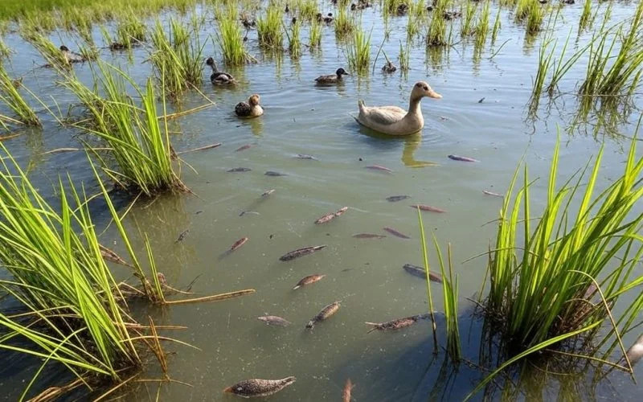

Rice-Fish-Duck Ecosystem
A zero-waste operational manual. Turn one acre into three income streams.
1. Site Feasibility & Pre-requisites
🌱 Soil Requirement
Clay Soil is Mandatory.
You must have soil that retains water. Sandy soil drains too fast for the fish trenches and
refuge ponds.
💧 Water Security
Must be Irrigated.
Rain-fed fields are too risky. You need a reliable water source to maintain levels for fish
during dry spells.
📏 Land Area
Min: 1 Hectare (2.5 Acres).
Below this size, the cost of digging trenches and fencing makes the project economically
unviable.
2. Infrastructure & Layout
The design relies on gravity and fish behavior. The "Refuge Pond" is the safety zone.
🚧 Construction Specs
- Refuge Pond: Dig a 1m deep pond at the lowest corner (10% of field area).
- Trenches: 0.5m deep channels connecting the pond to the rest of the field.
- Duck Housing: Build directly OVER the pond with slatted floors so manure falls into water.
3. The Nutrient Cycle
Why no fertilizer? Because the system feeds itself.
Manure drops into water
Algae blooms from manure
Eat plankton & pests
Absorbs fish waste
4. Operational Calendar
Transplant rice seedlings. Keep water low (5cm). No animals yet.
Roots are established. Increase water to 15cm. Release fish fingerlings.
Rice stems are strong enough. Release ducklings. Start daily grazing.
Remove Ducks Immediately. Rice is flowering. Ducks will eat the grain if left in the field.
Drain the field. Fish retreat to the deep refuge pond. Harvest rice.
5. Risks & Solutions
⚠️ CRITICAL: NO CHEMICALS
Do not use chemical pesticides. The water is shared. Pesticides safe for rice will kill your fish and ducks instantly. Use neem oil or let the ducks eat the pests.
| Problem | Solution |
|---|---|
| Fish gasping at surface | Low Oxygen. Stop duck manuring & add fresh water. |
| Rice plants uprooted | Ducks released too early. Wait until Day 20. |
6. Economics
💰 Cost Savings
- Fertilizer: $0 (Replaced by manure)
- Pesticide: $0 (Replaced by ducks)
- Weeding Labor: -90% (Ducks eat weeds)
📈 Income Streams
- Rice: 10-15% higher yield due to aeration.
- Fish: Sold at end of season.
- Eggs: Daily income from ducks.